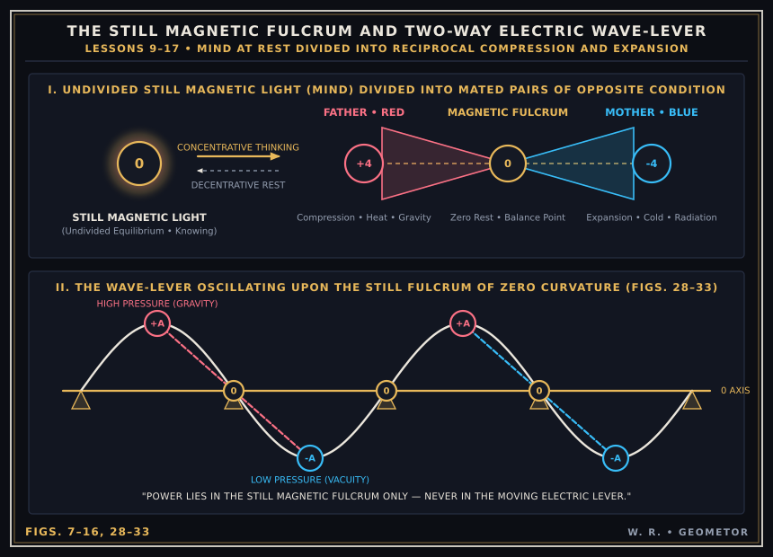
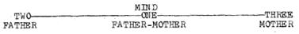
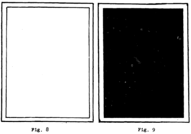
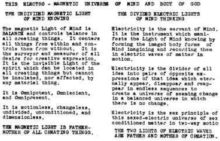
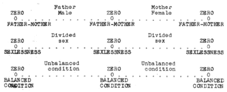

LESSON NUMBER 9 FIRST PRINCIPLES¶
GEOMETOR Revamped Cosmogony Plates
This lesson’s core geometric diagrams have been reconstructed as precision parametric vector plates:


GEOMETOR Vector Reconstruction (Figs. 7–16, 28–33): The Still Magnetic Fulcrum (0) and Divided Electric Wave-Lever.¶
In the first eight lessons I have purposely laid the foundations for a better understanding of God–the nature of God–the relationship of God to man and to His universe–the structure of the material universe and God’s processes of creation.
Now again I wish to strongly emphasize the fact that what you will find as I gradually take you behind the scenes of God’s cosmic stage IS UTTERLY SIMPLE and as fully comprehensible to you–WHEN YOU FINALLY GET IT–as adding two and two together.
Do PLEASE take my word for it and never for a moment say it is over your head, or that you cannot understand it–for you can understand it. Remember that new knowledge always seems over your head. You have got to think it over and over again, then meditate upon it until what you now read with your senses you will gradually KNOW in your Soul. IT WILL THEN BECOME A PART OF YOU.
The more you can become illumined with Cosmic Consciousness the more you will find yourself using God’s Mind as YOUR Mind–and God’s hands as YOUR hands.
To become a master of creative expression–by being able to make the short cuts to achievement that I have been enabled to make by my knowing–you must master each step as you go–each idea as you absorb it–by going back to it time after time until you begin to wonder WHY you could ever have thought any part of it difficult, for I again say that all of its seeming complexity will lead you to the most surprising simplicity.
To again accentuate the simplicity of it I will yet again say that if your intelligence is great enough for you to add up to nine, or to understand that you breathe inward and outward from a balanced center in you, you can understand the workings of most complex phenomena in all Nature. I say this to you seriously–and mean what I say–for God never passes nine in any creative expression nor does any phenomena in Nature ever exceed the principle upon which your breathing, or heartbeat is based.
Anything in Nature, or in your life’s problems, which might have one million parts and one million complexities, if taken apart, will be found to constitute one simple principle of three elements. God multiplies these three by three to make nine, but never more than that. So if you can understand the principle of the basic three, and if you can multiply that three by three, you can become the greatest chemist, metallurgist, electrical engineer, poet, painter, philosopher or inventor in the whole world if no one but you in the world did understand it.
This basic THREE, which cannot be added to nor subtracted from, will hereinafter be referred to as THE DIVINE TRINITY.
Now we shall begin at the beginning and build this structure of Creation from its birth in the Mind of The One Living Being, The One Person, The One Presence, God–Father-Mother Creator of the universe.
And that is where we shall begin–with the Personal Being of God–the ONE BEING–for God is, like you, a Person–THE ONE PERSONAL BEING in all the universe–for He IS the Universe–as you are the universe.
Like you, God is Mind which you cannot see, and He is body which you can see. Like God, you are Mind which no man can see and you are body which all men can see.
Like your body, God’s electric body is ever changing matter in motion, just as your body is ever changing matter in motion. Your body, which is God’s body, is motivated by a pulsing heartbeat and rhythmic breathing, inward and outward. Every little cell of your body breathes in and out and pulses to your heartbeat. Your body is the record of your thinking just as God’s body is the record of His thinking.
Your body is part of God’s body. You borrowed it from His body and you will return it to His body. Whatever attribute your body has God’s body has. God’s body pulses to its universal heartbeat. Every cell of God’s body breathes in and out–every sun, planet, growing plant or tree, electron of an atom or stellar galaxy. That is the most conspicuous fact of Nature.
Every body is an extension of God’s body. The universal heartbeat which records God’s concentrative-decentrative thought pulsations, is geared to your heartbeat. The heartbeat and breathing of the tiger in the jungle is the pulsing of God’s heartbeat and breathing.
God’s Soul is the Universal Soul–and you are that Soul. God’s Mind is the Universal Mind–and you are that Mind. God’s thinking is Universal thinking–and it is your thinking. God’s body is the Universal body–and you are that body.
God’s Light is the sexless Father-Mother of the universe–and your Light is the sexless Father-Mother of the universe. Likewise God’s divided thinking is the sex conditioned father and mother of all creating things–as your divided thinking is the sex conditioned father and mother of all creating things.
God, the One Person, is YOU. You faintly know that at this early stage of your unfolding Consciousness.
Life by life, and age by age will pass with your greater and still greater awareness of that fact until gradually that individuality which you think of as your PERSON will merge into the PERSON of the One Being whom all men already are.
You are still in that state of the unfolding of the man-idea in which electric sensed awareness of your body predominates. So long as sensed awareness predominates over Cosmic Mind awareness you will feel the separateness of yourself as one of many ones, and God will be afar.
With the gradual unfolding of the Cosmic Conscious awareness of the Light in you, your separateness will disappear in unity, and you can knowingly say, “I and my Father are ONE.”
COSMIC THINKING¶
The more cosmic our thinking becomes the more our understanding of our unity with God becomes. Cosmic man gradually ceases to think of the universe and its Creator as Mind and matter, or as the visible and invisible universe, or as the physical and spiritual universe.
The cosmic thinker, who knows God in his heart as his very Self–yea, who knows Him as his very Soul–thinks of the whole universe as God–the One Personal Being. One who has been illumined into full Cosmic Consciousness could not possibly think of God in any other way.
I cannot, because in my lifetime of such complete God-Consciousness I have grown to think of the Universal Consciousness as my Consciousness, and because of a lifetime of working knowingly with God I could not think of Creator and Creation separately, or apart from me. I might think of the Creator and Creation as Mind and body of God, but not as Mind and matter. Nor could I think of Mind and body of God as separate from each other, nor without including my Self.
Neither you nor I ever think of our personal selves as Mind and matter. That would be impossible for we are so familiar with the idea of their oneness that when we think of ourselves we include the whole structure of our own little personal universe.
What I desire of you is that you begin to think of God that way and cease thinking of Him as past ages of man have always thought of Him, for it is that separative thinking of God that has placed God afar from man, a divine Being dwelling somewhere afar and outside of man.
All Cosmic Conscious mystics have expressed that thought. Jesus expressed it in saying: “I and My Father are one.” He emphatically stated that He alone, without the Father, could do nothing. He also stated that whatever He did with the Father, you also could do.
Therefore, I say to you that you should write the desire deep into your Soul, through your heartbeat, so that you should be enabled to vision the universe as a WHOLE, with you yourself as its center. Think of your desire as God’s desire expressed through you. As you gradually learn to think that way God comes ever closer until there is absolute Oneness.
When I tell you to write the desire upon your Soul I mean that until you do so you will not know it as a part of you. And when you so know it nothing can prevent its fruition, for all the law of the universe is yours to command to bring that desire to fruition.
And when I say to write it on your Soul, through your heartbeat, I mean that the heartbeat of the universe which manifests the law is your heartbeat. When you think that way, with KNOWING back of your thinking, your desire unfolds as naturally as though it were a part of the pattern of your destiny.
When, however, you just write your desire upon your senses and it never gets beyond your brain, you do not KNOW it. You may believe it as an intellectual conclusion, but believing that way is sensing, not KNOWING, for it is but the senses of the brain which remember and repeat beliefs but the Conscious Mind alone KNOWS.
I have dwelt upon this idea for some length, for the transformation from sensing to knowing will be easier for you to make for yourself the more you are enabled to comprehend the status of each. To better help you to make the transition get into the fixed habit of thinking with God’s Mind, knowing that you are the One Being, and working with God’s hands, knowing that you are the One Body of the One Being.
The more you can lose your own individuality by thinking universally, the more you can find your greater individuality in God. John Jones of Earth shall become the divine John Jones of the high heavens whose dwelling place is the kingdom of God’s Light, whenever he desires to make that glorious transition. In other more familiar words you must lose your life of Earth to find your life eternal.
The more you can do this the more you are thinking cosmically from a Cosmic Conscious basis, therefore, the state of Cosmic Consciousness will be ever integrating THROUGH the seat of sensation and finding rest in its centering Light of Consciousness.
Step by step I will clarify this idea for your greater comprehension.
FIRST PRINCIPLES SUMMARIZED IN POSTULATES¶
The CREATOR is the all-knowing Mind of undivided still and unconditioned magnetic Light.
Mind thinks in electric pulsations which constitute the universal heartbeat. Mind thinks because of desire to manifest what Mind knows.
The electric pulsations of Mind thinking are concentrative-decentrative sequences, expressed in light-waves.
Concentrative thinking produces formed dense visible bodies from invisible space, by integrating large volumes into small volumes.
Decentrative thinking disintegrates dense concentrated bodies and returns them to invisible expanded space.
Mind knows all idea. All idea is Creation.
Thinking takes idea apart by dividing idea into two opposite electrical conditions which multiply through interchange to create many forms of many ideas.
The light waves of thinking create electrically vibrating sensed bodies. Electrically vibrating bodies cannot KNOW anything but can sense everything. Conscious Mind cannot sense anything but can KNOW everything. Consciousness is static. Sensation is dynamic. That which you can SEE you cannot KNOW. That which you can KNOW you cannot SEE.
AXIOMS¶
The REALITIES of life are BALANCE, LOVE, TRUTH and the LAW. These are the QUALITIES of Mind which you cannot SEE. You can only KNOW them. The unrealities of life you can alone SEE, for they cannot be KNOWN. The REALITIES are QUALITIES of Mind at rest. The UNREALITIES are QUANTITIES of sensed matter in motion.
EXAMPLES¶
You can KNOW God but you cannot SEE Him.
You can SEE God’s body but you cannot KNOW it.
Likewise you can KNOW a friend and can SEE his body, but you cannot SEE him or KNOW his body.
You cannot KNOW a sunset sky but your senses can SEE it, and comprehend it. That which you can KNOW about a sunset sky is its BEAUTY which you cannot SEE, for BEAUTY, like LOVE, TRUTH and the LAW are REALITIES which can only be KNOWN.
AN INTRIGUING THOUGHT FOR DEEP MEDITATION¶
Ask of yourself this question, Wherein does my seemingly separate identity differ from God’s identity? Your KNOWING will answer: I have a Mind which is God’s Mind. I have a body which is of exactly the same material as God’s body. It is made up of corpuscles of dense matter surrounded by a large amount of space between each corpuscle, just as God’s body is constructed. My body differs only in scale from the universal body. It has been created out of Light by dividing it into light waves just as God’s body has been created. God created His body, which is my body, by His thinking. I am His thinking. I have created my body with my thinking. What God is I AM. My Father and I are ONE. I am not alone I. I am the universe.
THE DIVINE TRINITY¶
The universe of Creator and Creation is founded upon three elements–MIND–which is ONE–and the electric thinking of Mind–which is two, the two electric pulsations of the universal body.
The One Light of Mind is the unconditioned, undivided and sexless FATHER-MOTHER of the One Whole Idea of Creation.
The two divided lights of Mind thinking are the dually sex-conditioned FATHER and MOTHER of all body forms of the infinitely many ideas which constitute Creation.
THIS IS THE MOST IMPORTANT IDEA YET GIVEN TO YOU FOR IT IS THE BASIS OF ALL THINGS.¶
The reason for its supreme importance is because all you have to make use of in building your entire structure of knowledge and power for creating ANYTHING, or for solving ANY PROBLEM, are these three elements:

Archival Plate (image010.gif)¶
These three are THE DIVINE TRINITY of this Mind controlled sex conditioned pairs of opposite sex mates of this sexed electric universe which we will henceforth carefully consider by taking
ONE LITTLE STEP AT A TIME¶
I believe we have now arrived at a point where I can make the great–but SIMPLE–underlying principle of Creation perfectly clear to you. I know, however, that its very simplicity will be your greatest hurdle to overcome because of the seeming complexity of everything, and the multiplicity of so many kinds of things and conditions of things which constitute this universe. Your lifetime of living so complex and multiple an existence, has unfitted you for seeing so vast a thing as this universe simply.
I know that the only way to break down that lifelong habit of thinking and seeing complexly is to take one little step at a time, by taking up one little idea at a time, and tell it to you as though you were children, and make sure that you understand each step before the next one is taken.
The first simple step is to call your attention to that illusion of infinite complexity in the familiar toy known as the kaleidoscope. If you look through it you will see an endless repetition of effect reaching out toward infinite space. But if you could get within it you would see three mirrors and a few pieces of broken glass of different colors. The mirrors, reflecting in each other, extend their reflections out into an imagined infinity which is not actually there. That imagined infinity, is but reflected light and form projected upon an imagined screen of space, to create an illusion of patterned forms which also are not there.
I cite this simple example because the entirety of Creation is also based upon three mirrors of magnetic Light which project the Whole Idea of Creation out into an imagined infinity of space which is not there, and of time which is not there, to create a cosmic illusion of patterned forms and countless effects which also are not there.
In my Illumination I immediately knew that the entirety of the electric universe of matter in motion is an unreality, a cosmic illusion. In that first timeless flash I knew that God alone exists–God the ONE. Likewise I knew the ONE-TWO pulsations of the heartbeat of God’s thinking.
Knowing that I knew all there is to know, for knowing God as IDEA, and as God’s body as IDEA MANIFESTED IN THOUGHT, I could then know the unreality of time, space and motion which manifests thought and the reality of the KNOWER and THINKER AS THE DIVINE TRINITY.
If I could but teach you the way God taught me it would all be yours to know timelessly–but the next best thing is to take you back with me to that timeless flash of all-knowing and try to describe that timeless all-knowing as best I can, and amplify that with God’s words which I wrote down as my divinely inspired teachings during the time of complete severance.
I instantly knew the KNOWER as ONE–the ONE undivided magnetic Light of all-knowing Mind.
I also knew the THINKING of the KNOWER to be TWO–the TWO of the pulsing heartbeat of the KNOWER’S electric thinking.
In the KNOWER and THINKER I knew THE DIVINE TRINITY as the ONE.
In the KNOWER I knew the ONE WHOLE IDEA of His all-knowing to be the LOVE IDEA OF FATHER-MOTHERHOOD as a static idea, untreated, unconditioned, unexpressed, but DESIRED.
In the THINKER I knew the FATHER-MOTHERHOOD IDEA divided into FATHERHOOD AND MOTHERHOOD as a dynamic expression of the static Mind-imagined idea. The FATHER idea is expressed by the inward pulsation of the heartbeat of God’s thinking and the MOTHER idea by the outward pulsation.
One pulsation starts from rest in the magnetic Light at a zero point of desire, seeks a zero point of rest in the Light at the fulfillment of desire and returns to the zero point of its beginning to repeat it in endless sequences.
The important thing for you to comprehend regarding the above is that every moment of your life you are attempting to fulfill some desire. Every effort you make toward that fulfillment is a positive action starting from rest to seek a point of rest. Your positive action expresses FATHERHOOD.

Archival Plate (image011.gif)¶

Archival Plate (image012.gif)¶
In your thinking it is CONCENTRATIVE. Concentration of thought expresses FATHERHOOD. In concentration you have formed the seed pattern for the next effort for fulfilling your desire.
After you have reached the rest point of fulfillment you must then relax your effort and carry only the seed pattern of that desire outward to rest in expanded space for rebirth into the pattern of seed. That is the negative reaction which expresses MOTHERHOOD.
In your thinking it is DECENTRATIVE. Decentration expresses MOTHERHOOD. Fruition of any desire whatsoever demands constant interchange between the FATHER and MOTHER actions and reactions.
I will diagram the DIVINE TRINITY of Creator and Creation as follows:
The above diagrams are fraught with more meaning than I can tell you in many lessons. I will gradually unfold this idea of undivided sex as CAUSE of all EFFECT and of divided sex as the one great underlying principle of all creating and disintegrating things.
The above diagrams are the key to the great secret which science has for so long been looking, the secret key which is the foundation of, and repeated in all phenomena of motion. That key is sex.
To put it into words it could be expressed as follows: The BALANCED IDEA of FATHER-MOTHERHOOD is divided and extended into equally and oppositely UNBALANCED IDEAS of FATHER and MOTHERHOOD.
If, at this point, you do not grasp the idea clearly do not dwell too much on it, for I will give you a hundred examples in the following lessons which, you will find, will repeat the above key principle without variation.
It might clarify it a little for you if, before you dismiss it temporarily from your Mind, you take a deep breath by starting from rest and pulling inward from within until you have to stop at a point of rest where your desire to breathe has been fulfilled. You will find yourself in an unbalanced state of compression which you cannot possibly maintain. From that rest point you will be compelled to thrust out from within and expand to regain your balanced condition at another point of rest which you also cannot maintain.
Could you not then reason yourself somewhat as follows: This is a universe of REST from which motion extends two opposite ways to simulate rest through motion?

Archival Plate (image013.gif)¶
Perhaps you might dwell on this idea a little longer and reason it out a little more clearly by throwing a ball in the air. Again you will find that you have to start from a zero of rest to throw the ball which must seek a zero of rest (after the desire has been fulfilled) when it will then return to the zero of its beginning.
When my words to you seem inadequate I turn to the words of my divine Teacher for His words used in teaching me. I will quote His teachings as written down in The Divine Iliad.
“All things are One, but made to appear as two extensions of the One.
“Know thou that the two extensions of My recorded thinking are divided by the One which centers the two, the One controlling the two.
“For behold, I am within all things centering them, and I am without all things controlling them.”